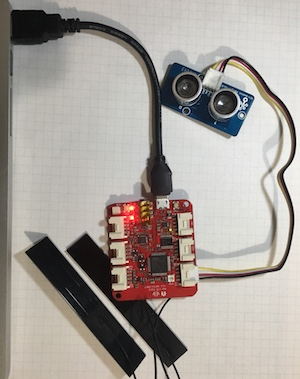
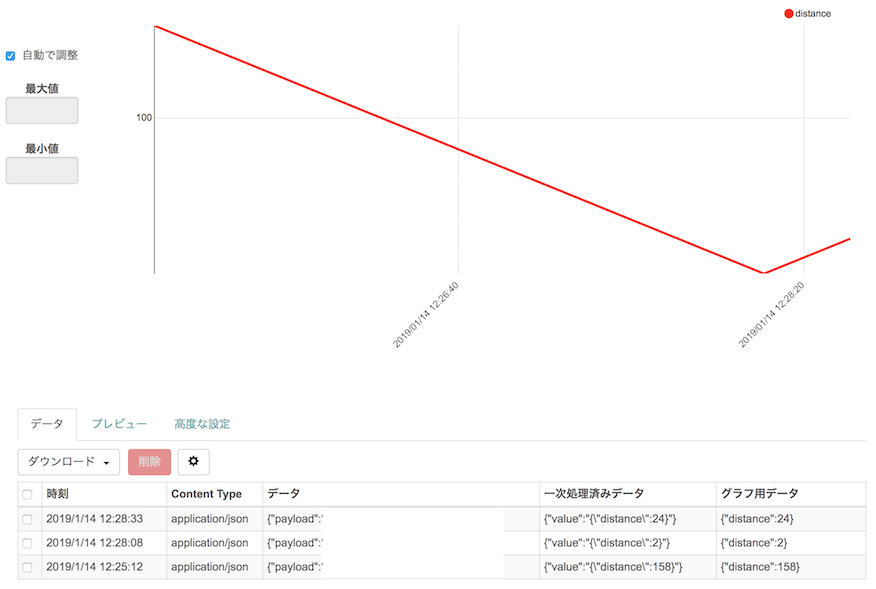

mruby/cで始めるオリジナルIoTデバイス作り
初稿：2019-01-27
はじめに
こんにちは、kishimaと申します。 mruby/c（えむるびーすらっしゅしー）という言語を皆さんは御存知でしょうか？ この記事では、mrubyから派生して生まれたmruby/cを使ったIoTっぽい電子工作について説明していきたいと思います。
mruby/cでIoT
筆者は仕事で馴染み深かったのもあり、2017年後半あたりから電子工作を本格的に趣味として始めました。 機器の制御のためにマイコンにソフトを書き込むわけですが、プログラミング言語は基本的にC言語を用いてきました。
しかしちょっとした機能の実装に、いつもC言語を使うのも面倒と感じる場面も多く、Rubyのようなスクリプト言語を使えたらいいなとずっと思ってきました。
最近では、mrubyという選択肢もあるわけなのですが、RAMが数百KB程度のマイコンで動かすことを考えると、mrubyは動かせないということはないのですが、ある程度自由に実装するにはちょっとリソースがぎりぎりであることが多く、採用を見送ってきました。
ふと思いたち、ちょっと調べてみると、よりマイコン向けに特化した「mruby/c」という言語が開発されていることを発見し、これだ！と思い、早速飛びついたわけです。
本記事では、センサからデータを取得して、モバイル通信網にデータを送る作業をmruby/cで行うための一連の流れを紹介します。本記事の内容を応用すれば、mruby/cを利用して自分の好きなIoTデバイスを作れるようになるはずです！
mruby/cとは
mruby/cについて詳しく知らない方のために、まずmruby/cの紹介から入りたいと思います。
mruby/cとは、しまねソフト研究開発センターのサイトの記載によれば、
「mruby/cは、Rubyの特徴を引き継ぎつつ、プログラム実行時に必要なメモリ消費量が従来のmruby（福岡で開発された組込み向けの軽量Ruby）より少ないmrubyの実装です。」
というものだそうです。
特徴
mruby/cの特徴をもう少し詳しく見てみましょう。
mruby/cは以下のgithubリポジトリで公開されています。
https://github.com/mrubyc/mrubyc
2019年1月現在は、Version1.2が最新となっています。 mrubyと比較して、言語としての機能がかなり制限されていますが、その分とてもコンパクトです。 githubで公開されているリポジトリのReadmeには以下のように記載されています。
| mruby/c | mruby | |
|---|---|---|
| memory size | < 40KB | < 400KB |
| main target | one-chip microprocessors | general embedded software |
メモリのサイズが40KB未満でも動作することが謳われており、SRAMを内蔵したワンチップマイコンのような環境でも動くことが特徴です。
mrubyとの違い
mrubyとmruby/cは名前が似ていますが、何が違うのでしょうか？
mruby/cはmrubyのバイトコードをそのまま用いることを前提としており、mrubyのVMに相当する部分だけを提供しています。 その構造の違いを簡単に図で表してみようと思います。 以下がmrubyの構成となっています。

スクリプトをParserで構文解析し、Code Generatorでバイトコードにコンパイルします。そしてVirtual Machine(VM)がバイトコードを実行します。mrubyでは処理の複雑なコンパイルまでの処理を別環境で行い、VMだけ実環境で動かすことができるようにVMを独立させることができる構造になっています。
mruby/cの構成を以下に示します。

mruby/cでは実はParserとCode Generatorの部分はmrubyの実装をそのまま使用しています。mruby/cではバイトコードの生成はPCなどで行うことを前提とし、VMだけを独自のコンパクトな実装を用いることで、mrubyとの互換性をある程度保ちつつマイコン向けの環境を提供しています。
さきほど、言語としての機能が制限されていると書きましたが、一例として、mruby/cでは、mrubyと比較して、mrbgemsという機能拡張の仕組みがないため、mrubyがmrbgemsで実現している機能を実現するためには独自に都度ポーティングする必要があります。 その他、例外やモジュールが削られていたりなど、大きな違いがあります。
もう一点大きな違いとして、mruby/cではマルチタスク機能をデフォルトでサポートしている点があります。マイコンを使った開発では、外部のデバイスの監視や応答待ちなどで非同期の処理が多く発生します。mruby/cでは、そのような処理を実装するために簡易的なマルチタスク機能が利用できます。 mruby/cでは、タスク間で共通のクラス定義、グローバル変数空間を参照しており、mutexで排他処理を実装可能です。
その他には、定量的な説明が難しいポイントですが、機能を削ったことにより実装の規模が小さくなっている点があります。 実装がシンプルなので、ソースコードを眺めたときに各処理の動きの見当がつきやすく、ポーティングが非常にやりやすい点は、個人的にはとても嬉しいメリットと感じています。
開発環境の構築
では、本格的に開発の準備を進めていきます。
こういった電子工作や組み込み機器の開発は、PCアプリの開発と違って、ハードウェアの準備から始まるのが特徴です。 最初にモバイル通信網にデータを送ってみることを目標とすると書きましたが、特にデバイス単体で通信を行うようなデバイスで、国内で個人で手に入るものはあまり選択肢が多くありません。 （海外で売られているデバイスは日本の周波数帯と合わないか、もしくは日本での認可を得ていないことが多いので注意です）
今回はWio LTEというLTEでデータ通信可能なボードを利用したいと思います。
またボード単体では基地局と通信できないので、日本のモバイル通信網に接続可能なSIMカードも必要です。
SIMは、個人でも簡単に手に入って、初期費用も安いSORACOM Air SIMを利用します。
Wio LTEに接続するセンサのサンプルとして、たまたま手元にあったSeeedの超音波距離センサを使ってみます。
その他の準備として、PCにはArduinoIDEがインストールされており、ビルド済みのmrubyのバイナリが存在することを前提とします。mrubyについては、最新のmruby2.0ではバイトコードフォーマットが更新されており、mruby/cと対応しないため、あえて古い1.3を使用しています。
WioLTEの説明

通信ボードのWio LTE JP versionについて説明します。本記事では以降、Wio LTE JP versionのことを、特に断りの無い限りWio LTEと呼びます。
Wio LTEは中国深センのSeeed Studio社製のLTE通信ボードです。 制御用のマイコンとしてSTM32というARMのマイコンが利用されており、回路図も公開されていています。 ちゃんと認証を取得した日本用のバージョンが販売されており、日本でも安心して使えます。
単なる通信機能だけでなく、外部デバイスとの接続インタフェースとして同社製品用のGroveコネクタも搭載しています。
SORACOMのサイトによれば、Wio LTEのスペックは以下の通りとなっています。
| 項目 | Wio LTE |
|---|---|
| プロセッサー | STM32F405RG, ARM Cortex-M4, 168MHz |
| フラッシュメモリ | 1MB |
| 内蔵SRAM | 192KB |
Wio LTEは日本向けにArduinoのライブラリが公開されていて、説明も手厚いです。 https://github.com/SeeedJP/WioLTEforArduino/wiki/Home-ja
開発環境としては、ArduinoIDEを使うのが最もお手軽かと思います。 導入については、下記の資料がわかりやすいです。 https://github.com/soracom/handson/wiki/Wio-LTE-%E3%83%8F%E3%83%B3%E3%82%BA%E3%82%AA%E3%83%B3
こちらの手順に従って、Wio LTEにソフトを書き込める状態にしましょう。
！注意！
本記事で用いているWio LTE JP versionは、2019年1月現在、秋月電子などで在庫がありませんが、SORACOMのサイト経由で購入が可能なようです。その他にも、Wio LTE M1/NB1(BG96)というボードもあります。そちらの利用もご検討ください。 筆者の環境ではWio LTE M1/NB1(BG96)は動作未確認ですが、本記事の内容はだいたい適用できるかと思います。
SORACOM Air SIM for セルラーの説明
SORACOM Air SIM for セルラーは、SORACOMが販売しているデータ通信用SIMカードで、IoTのような少量のデータ通信を断続的に行うようなユースケースに適したSIMカードです。これを用いることで、SORACOMが提供するデータ管理サービスとの連携も可能になります。
詳しくは以下を参照下さい。 https://soracom.jp/services/air/
Amazonなどで購入して、公式サイトの手順に従ってWeb画面上で開通処理を行うだけですぐ使えるようになります。 通信費も安いので、個人でちょっと試したい場合にも気軽に使えると思います。
今回はSORACOM Harvestという文字列で送ったデータをSORACOMのサーバで管理できる仕組みを使って、IoT的な通信の基礎を実践してみたいと思います。
SORACOM Harvestもあらかじめ使用の設定が完了していることを前提とします。従量課金の料金体系になっているので設定時はご注意下さい。
超音波距離センサ
Wio LTEに接続するセンサとして、Seeed社の超音波距離センサを使用します。

GroveというSeeed社が提供しているインタフェースに準拠しており、Wio LTEのGroveコネクタに接続するだけで使用できて簡単です。 詳しくは下記を参照下さい。 http://wiki.seeedstudio.com/Grove-Ultrasonic_Ranger/
Groveシリーズのセンサ類は、Arduino用にドライバライブラリが公開されているのがとてもありがたいです。 こちらの超音波距離センサ用のUltrasonicのライブラリも公式の手順に従って、Arduinoにインストール済みであることを前提とします。
実装方法
ここからが本題です。
mruby/cをWio LTEの上で動かすための手順について説明していきたいと思います。
mruby/cのポーテイング
Arduino環境にmruby/cを移植するためには以下のようなステップを踏みます。
mruby/cのリポジトリの取得
https://github.com/mrubyc/mrubyc からmruby/cのソースコードを取得します。 2019年1月時点ではVersion1.2が最新のリリースバージョンです。 ここではmasterの最新(2019/1/8:f864d19)を使ってみます。 （ArduinoIDEでのコンパイルエラーを避けるbug fixを使いたいためです）
Arduinoのライブラリの作成
まず、Arduino用のライブラリを作成します。
例えばMacの場合、~/Documents/Arduino/libraries/のようなディレクトリの下にlibmrubycForWioLTEArduinoというディレクトリを作成して、以下のような構成にします。
libmrubycForWioLTEArduino/
|- library.properties
|- src/
library.propertiesは、Arduino用のライブラリの設定ファイルです。 例えば以下のような内容を書き込みます。
name=mruby/c for Wio LTE
version=0.0.0
author=kishima
maintainer=kishima
sentence=mruby/c implementation for Wio LTE.
paragraph=
category=Communication
url=https://github.com/kishima/libmrubycForWioLTEArduino
architectures=Seeed_STM32F4
includes=libmrubyc.h
このような内容を書き込むことで、ArduinoIDEのライブラリとして認識されるようになります。
ソースのコピー
取得したmruby/cのソースのから、src/配下のファイルを、さきほど作成したlibmrubycForWioLTEArduino/srcにコピーします。
mruby/cのsrcには、hal_***というディレクトリが含まれていますが、これは、各種のボードに依存している機能を切り出しものです。halは”Hardware Abstraction Layer”の略（のはず）です。
以下のように対応します。
- hal_posix/をhal/にリネームする
- その他のhal_***/は削除する
HAL(Hardware Abstraction Layer)の実装
putsなどで用いられる文字列出力関数がhal.hにインライン関数hal_writeとして定義されているのですが、中身はwrite(1, buf, nbytes)となっていて、そのままでは期待通り動きません。
文字列の出力先は、ライブラリの開発者が環境に合わせて実装することが必要です。
Wio LTE Arduino Libraryでは、SerialUSB.printがデバッグ用シリアルへの出力を行うので、これを用いています。
注意点として、SerialUSB.printのようなArduinoのAPIはC++で実装されているので、hal.cからは直接呼べません。hal.cppを準備するなどして、CとC++の間を繋ぐ必要があります。
実装例を挙げると、inline static int hal_write()を以下のような関数に書き換えます。
（入力が2文字以上の場合、かならずヌル文字が終端にあることが前提になっています）
int hal_write(int fd, const void *buf, int nbytes)
{
char* t = (char*)buf;
char tbuf[2];
if(nbytes==1){
tbuf[0]=*t;
tbuf[1]='\0';
hal_write_string(tbuf);
return nbytes;
}
hal_write_string(t);
return nbytes;
}
そして、hal.cppというファイルを作成し、hal_write_string()を以下のように実装します。
extern "C" void hal_write_string(char* text){
SerialUSB.print(text);
}
このようにすることで、スクリプト上のputsなどの出力先がデバッグ用のシリアルになります。
もう一点、HALではタイマ割り込みの設定も考慮が必要です。mruby/cではマルチタスク機能を実現するために一定間隔でVMの処理を中断して、別のタスクのVMに処理を切り替える必要があります。
そのためにはハードウェアの周期的な割り込み機能を使うのがシンプルですが、それが使えない場合は、vm_config.hに#define MRBC_NO_TIMERという定義を追記すると、ソフト処理でのタスク切換えを行うようになります。
このようなポイントに注意することで、mruby/cの機能をArduinoライブラリとして利用可能となります。
実際にポーティングした結果のソースコードを下記のリポジトリにアップしていますので、詳細はそちらを参考にしてみてください。
https://github.com/kishima/libmrubycForWioLTEArduino
C拡張の書き方
mruby/cをポーティングしただけの状態だと、シリアルのコンソールに文字が出力されるだけで、他に何もすることができません。 ボード固有の機能を利用するためにはC言語で書かれているAPIをmruby/cから呼び出す必要があります。RubyのメソッドをC言語で実装するための方法を説明します。
クラスの追加
C言語で定義したクラスを追加するためには、mrbc_define_class()という関数を使用します。
以下に超音波センサのためのUltraSonicクラスを追加する例を示しています。
mrb_class *class_ultrasonic;
class_ultrasonic = mrbc_define_class(0, "UltraSonic", mrbc_class_object);
mrbc_define_class()の第一引数は特に考えず0で問題ないです。第二引数にRubyのクラス名を与えます。そして第三引数に親クラスを指定します。この場合は特別な親クラスを持つ必要がないので、オブジェクトクラス（mrbc_class_object）を親クラスとしています。
mrbc_define_class()の戻り値にはクラスオブジェクトを表すmrb_class構造体へのポインタが返って来ます。このポインタは破棄しても、UltraSonicクラスのクラスオブジェクトはグローバル定数として記憶されているので、定義が消えることはありません。
メソッドの追加
次に、UltraSonicクラスに、 距離センサの測値を返す、readメソッドを追加してみます。
メソッドの追加には、mrbc_define_class()関数を使用します。
以下に、その例を示します。
Ultrasonic ultrasonic(WIOLTE_D38);
static void class_ultrasonic_read(mrb_vm *vm, mrb_value *v, int argc ){
long val = ultrasonic.MeasureInCentimeters();
SET_INT_RETURN(val);
}
void define_ultrasonic_class(){
mrb_class *class_ultrasonic;
class_ultrasonic = mrbc_define_class(0, "UltraSonic", mrbc_class_object);
//method
mrbc_define_method(0, class_ultrasonic, "read", class_ultrasonic_read);
}
mrbc_define_class()関数の第一引数は、クラス定義と同じく0を指定して、第二引数にメソッドに対応するクラスをしていします。ここで、先程のclass_ultrasonicを与えます。
第三引数には、メソッド名であるreadを与えます。そして第四引数には、メソッドの処理を行う関数へのポインタを与えます。
メソッドの処理を表す関数の型はvoid (mrb_vm *vm, mrb_value *v, int argc )と決まっており、ここにメソッドの引数に関する全ての情報が格納されています。
距離センサのオブジェクトultrasonicは、WIOLTE_D38という値を与えて初期化しています。WIOLTE_D38がWio LTE基板上の接続端子を表しています。
ultrasonicに対して、MeasureInCentimeters()という関数で得た距離センサの測定値(cm)をSET_INT_RETURNというマクロでメソッドの戻り値に設定しています。
このような手順で、C/C++言語で書かれたライブラリとmruby/cの連携を図ることができます。 連携方法の全てを記事中で説明するのは難しいですが、より詳しい情報はmruby/cのヘッダファイルの定義などを参照すると理解が進むと思います。
先程も紹介した下記のリポジトリに、Wio LTEの通信APIなどをmruby/cのメソッド化した結果を公開しています。こちらを利用して超音波センサとWio LTEをmruby/cで動かしてみましょう。
https://github.com/kishima/libmrubycForWioLTEArduino
実機での動かし方
自分で作ったmruby/cのメソッドを利用したアプリを、実際に動かしてみましょう。
部品を接続するとこんな感じになります。

WioLTE実機への転送
以下のようなスクリプトをtest.rbという名前で保存します。
Wio.power_supply_LTE(true)
Wio.turnon_or_reset
Wio.activate("soracom.io", "sora", "sora")
sock = Wio.sock_open_udp("harvest.soracom.io",8514)
val = UltraSonic.read
Wio.sock_send(sock,"{\"distance\":#{val}}")
Wio.sock_close(sock)
puts "done"
Wio.activateというメソッドでSORACOMのサーバとのアクティベーションを行い、Wio.sock_sendというメソッドで測定した結果を{“distance”:val}という文字列でSORACOM Harvestのサービス(harvest.soracom.io:8514)に送信します。
このスクリプトを以下のようなmrubyのコマンドで、バイトコードを16進数配列で表したC言語ファイルに変換します。
$ mrbc -E -B code test.rb
test.cというファイルができるはずです、この内容をArduinoのinoファイルで以下のように貼り付けします。
#include <libmrubyc.h>
#include <stdint.h>
const uint8_t code[] = {
0x52,0x49,0x54,0x45,0x30,0x30,0x30,0x34,0x20,0x3e,0x00,0x00,0x01,0xa0,0x4d,0x41,
0x54,0x5a,0x30,0x30,0x30,0x30,0x49,0x52,0x45,0x50,0x00,0x00,0x01,0x63,0x30,0x30,
0x30,0x30,0x00,0x00,0x01,0x5b,0x00,0x03,0x00,0x08,0x00,0x00,0x00,0x00,0x00,0x21,
（中略）
};
#define MEMSIZE (1024*50)
static uint8_t mempool[MEMSIZE];
void setup() {
delay(100);
SerialUSB.println("--- begin setup");
mrbc_init(mempool, MEMSIZE);
mrbc_define_wiolte_methods();
if(NULL == mrbc_create_task( code, 0 )){
SerialUSB.println("mrbc_create_task error");
return;
}
SerialUSB.println("--- run mruby script");
mrbc_run();
}
void loop() {
delay(1000);
}
mrbc_create_task()という関数でバイトコードが格納された配列を読み込み、mrbc_run()で実際にVMで処理を行っています。
準備ができたら、Wio LTEを接続して、DFUモードに切り替えた後、ArduinoIDEの書き込みボタンをクリックして、ビルド＆書き込みを行います。
DFUモードでは、通常のプログラムは起動せず、プログラムの書き込みを待ち受ける状態になります。 細かいボタン操作については、先に紹介した参考サイトを参照下さい。
動作チェック
では実際に動かしてみましょう。書き込んだ後にボードのリセットボタンを押すと、書き込んだプログラムが起動します。
動かしてみた結果のシリアルログを示します。
— begin setup
— run mruby script
class_wio_power_supply_LTE
class_wio_turnon_or_reset
TurnOnOrReset OK
send:{“distance”:158}
done
３度ほどリセットを行って、距離の測定値をサーバに送信した後、SORACOMの管理画面から見た結果を下記に示します。

実際に測定した距離の数値（{“distance”:158}など）が転送されていることが確認できました！
この先は、SORACOM Beamのような機能を利用して、AWSとの連携も可能です。後は煮るなり焼くなり自由自在というわけです。
今回はとりあえず動かすためにバイトコードをコピペしたりしていますが、開発フローの効率化のために、@hasumikin さんのmrubyc-utilsというツールもありますので、興味のあるの方は御覧ください。 https://github.com/hasumikin/mrubyc-utils
まとめ
この記事では、WioLTEというモバイルデータ通信が可能なボード上で、mruby/cを使って開発を行う基本的な方法を紹介しました。 環境をそろえるのが面倒だったりしますが、一度始めてしまえば意外とあっさり動くので、興味のある方はぜひトライしてみてほしいです。
著者について
組み込みソフト系サラリーマンです。Rubyは趣味として触れ合うことが多いです。 TokyuRuby会議のスタッフをしたり、Kawasaki.rbに時々参加したりしています。